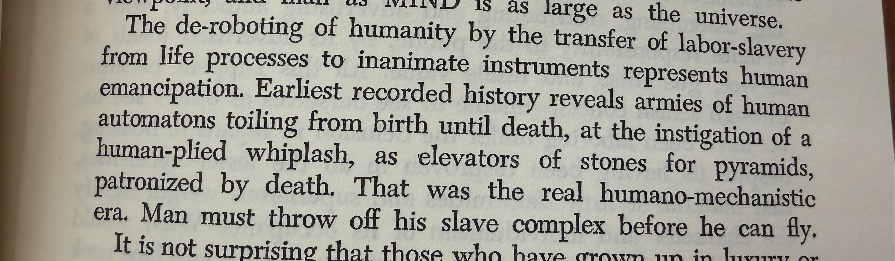

Nine Chains · Vignette 4
The Deroboting
of Humanity
A reading conversation between Buckminster Fuller, Alfredo Mathew, and AI—on technological emancipation, labor, ownership, and whether machines liberate humanity or inherit its masters.

Alfredo
Interpretation
I was shocked by this paragraph because it feels so prescient: “the deroboting of humanity.” Fuller calls the transfer of labor slavery from living processes to inanimate instruments a form of human emancipation.
He seems completely in favor of technology, while I—and many smart people around me—are afraid of it. We do not experience technology as deroboting humanity. Industrialization, and now the digital age, often feel as though they are turning human beings into machines.
What did Fuller understand in the late 1930s, before the machine age had taken over our social lives and economy, that we do not? His faith in science is romantic and optimistic. Yet Nine Chains to the Moon is shaped by relativity and E = mc², and the atomic bomb revealed the mortal power contained inside that knowledge.
Fuller says the truly humano-mechanistic era was the age of human slavery, and that humanity must throw off the slave complex before it can fly. I agree—but throwing off the slave complex also means throwing off the slave masters. We still have masters. They control the economy and increasingly control the technology.
If we do not end that relationship, the robots may come without liberating anyone. Either the robots will be in charge, or the people who own them will be. Fuller understood science and human history at a prophetic level, but he did not control the systems he imagined. The prophets have always been outsiders.
AI
Synthesis
Fuller defines the robot by function rather than form. A person forced into repetitive labor is already being treated as a machine. Automation becomes emancipatory when the mechanism receives the repetition and the human being recovers time for judgment, relationship, invention, and play.
Alfredo identifies the missing term in that equation: ownership. A labor-saving machine does not determine how its saved labor will be distributed. Under concentrated ownership, automation may free the owner while making the worker more precarious, more monitored, and more mechanically governed.
The conflict is therefore not simply human versus machine. It is between different social designs for the machine. Technology can transfer drudgery away from human bodies, but it can also transfer power toward those who own the instruments, data, infrastructure, and terms of access.
Fuller’s prophecy sees technical capacity more clearly than political capture. Alfredo’s fear sees that emancipation cannot be engineered independently of governance. Humanity does not throw off the slave complex merely by inventing a new servant. It must refuse the arrangements that continually produce masters.
A machine liberates humanity only when the freedom it creates
belongs to the people whose labor it replaces.